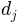
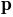
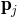
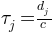
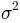

>>> !date
vendredi 24 juin 2016, 09:26:27 (UTC+0200)
Robust Geometric Positioning Algorithm¶
>>> from pylayers.location.geometric.constraints.cla import *
>>> from pylayers.location.geometric.constraints.toa import *
>>> from pylayers.location.geometric.constraints.tdoa import *
>>> from pylayers.location.geometric.constraints.rss import *
>>> from pylayers.network.model import *
>>> import matplotlib.pyplot as plt
>>> %matplotlib inline
Let’s define 4 anchors in the plane.
>>> pt1=np.array(([0,0]))
>>> pt2=np.array(([10,15]))
>>> pt3=np.array(([5,28]))
>>> pt4=np.array(([-10,-10]))
>>> p = np.array((0,5))
Then displaying the scene with anchor nodes (in red) and blind nodes in blue
>>> f=plt.figure()
>>> ax=f.add_subplot(111)
>>> ax.plot(pt1[0],pt1[1],'or',label='anchor 1')
>>> ax.plot(pt2[0],pt2[1],'or',label='anchor 2')
>>> ax.plot(pt3[0],pt3[1],'or',label='anchor 3')
>>> ax.plot(pt4[0],pt4[1],'or',label='anchor 4')
>>> ax.plot(p[0],p[1],'xb',label='p')
>>> ax.legend(loc='best')
>>> a = ax.axis([-20,20,-20,40])
The euclidian distance  between the blind node  and anchors  are then evaluated.
The associated time of flight is 
>>> d1=np.sqrt(np.sum((pt1-p)**2))
>>> d2=np.sqrt(np.sum((pt2-p)**2))
>>> d3=np.sqrt(np.sum((pt3-p)**2))
>>> d4=np.sqrt(np.sum((pt4-p)**2))
>>> toa1=d1/0.3
>>> toa2=d2/0.3
>>> toa3=d3/0.3
>>> toa4=d4/0.3
>>> print 'distance p1=',d1, ' m' , '/ toa1=',toa1, 'ns'
>>> print 'distance p2=',d2, ' m' ,'/ toa2=',toa2, 'ns'
>>> print 'distance p3=',d3, ' m' ,'/ toa3=',toa3, 'ns'
>>> print 'distance p4=',d4, ' m' ,'/ toa3=',toa4, 'ns'
distance p1= 5.0 m / toa1= 16.6666666667 ns
distance p2= 14.1421356237 m / toa2= 47.1404520791 ns
distance p3= 23.5372045919 m / toa3= 78.4573486396 ns
distance p4= 18.0277563773 m / toa3= 60.0925212577 ns
RGPA (Robust Geometric Positioning Algorithm)¶
Exploiting Time of Arrival (ToA) only¶
We call Constraint Layer Array (CLA), the object which gathers all the geometric constraints of a considered scenario.
>>> C=CLA()
Instanciate TOA constraints, notice that their id are different.
>>> T1=TOA(id=0,value = toa1, std = np.array([1.0]), p = pt1)
>>> T2=TOA(id=1,value = toa2, std = np.array([1.0]), p = pt2)
>>> T3=TOA(id=2,value = toa3, std = np.array([1.0]), p = pt3)
>>> T4=TOA(id=3,value = toa4, std = np.array([1.0]), p = pt4)
Then, add the 4 TOA constraints to the CLA.
>>> C.append(T1)
>>> C.append(T2)
>>> C.append(T3)
>>> C.append(T4)
All the constraints of the CLA can be listed as follows
>>> C.c
[node | peer |type | rat | p | value | std | runable| usable|
0 | |TOA | | [0 0] | [ 16.667]| [ 1.]| 1| 1|,
node | peer |type | rat | p | value | std | runable| usable|
1 | |TOA | | [10 15] | [ 47.14] | [ 1.]| 1| 1|,
node | peer |type | rat | p | value | std | runable| usable|
2 | |TOA | | [ 5 28] | [ 78.457]| [ 1.]| 1| 1|,
node | peer |type | rat | p | value | std | runable| usable|
3 | |TOA | | [-10 -10] | [ 60.093]| [ 1.]| 1| 1|]
Get information about the CLA :
- type : TOA / RSS
- p : Position of the origin of the constraint
- value : power ( RSS ) / time in ns ( TOA)
- std : standard deviation  of value
- runable : does the constraint has a position p ?
- obsolete : does the value has been obtained recently ?
- usuable : runable AND NOT obsolete
- evlauated : obsolete
>>> C.info()
type , p , value, std , runable, usable, obsolete, evaluated
TOA , [0 0] , [ 16.667], [ 1.], 1, 1, 0, 0
type , p , value, std , runable, usable, obsolete, evaluated
TOA , [10 15] , [ 47.14], [ 1.], 1, 1, 0, 0
type , p , value, std , runable, usable, obsolete, evaluated
TOA , [ 5 28] , [ 78.457], [ 1.], 1, 1, 0, 0
type , p , value, std , runable, usable, obsolete, evaluated
TOA , [-10 -10] , [ 60.093], [ 1.], 1, 1, 0, 0
Update the CLA
>>> C.update()
Compute the cla
>>> C.compute()
True
/home/uguen/Documents/rch/devel/pylayers/pylayers/location/geometric/util/boxn.py:92: FutureWarning: comparison to None will result in an elementwise object comparison in the future. if Lb==None:
True
show the estimated position
>>> C.pe
array([ -4.735e-03, 4.992e+00])
to be compare with the actual position value
>>> p
array([0, 5])
RSS¶
The RSS is a quantity which is weakly related to distance via a parametric model. The better the model, the better would be the inference about the associated distance. In that purpose, the Path Loss shadowing model is a widely used model.
To define the classical path loss shadowing model widely used in this context the PLSmodel class has been defined.
>>> M = PLSmodel(f=3.0,rssnp=2.64,d0=1.0,sigrss=3.0,method='mode')
For simulation purpose : get RSS from distances (or associated delay) with the above model
>>> toa1
16.666666666666668
>>> M.getPL(toa1,1)
8.8530311885002018
TDOA¶
>>> Td1=TDOA(id=0,value = toa1-toa2, std = np.array([1.0]), p = np.array([pt1,pt2]))
>>> Td2=TDOA(id=1,value = toa1-toa3, std = np.array([1.0]), p = np.array([pt1,pt3]))
>>> Td3=TDOA(id=2,value = toa1-toa4, std = np.array([1.0]), p = np.array([pt1,pt4]))
>>> C=CLA()
>>> C.append(Td1)
>>> C.append(Td2)
>>> C.append(Td3)
>>> C.compute()
True
>>> C.pe
array([ 0.021, 4.987])